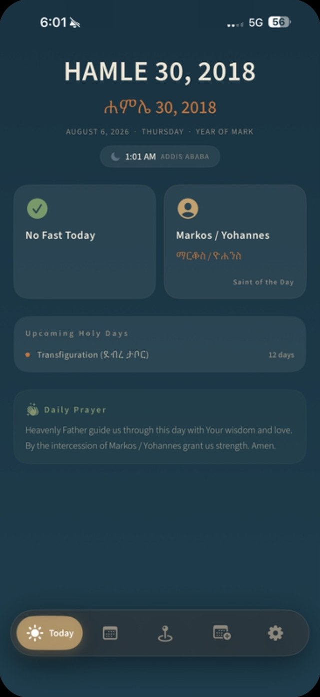
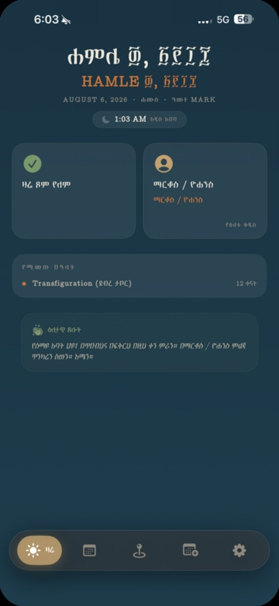
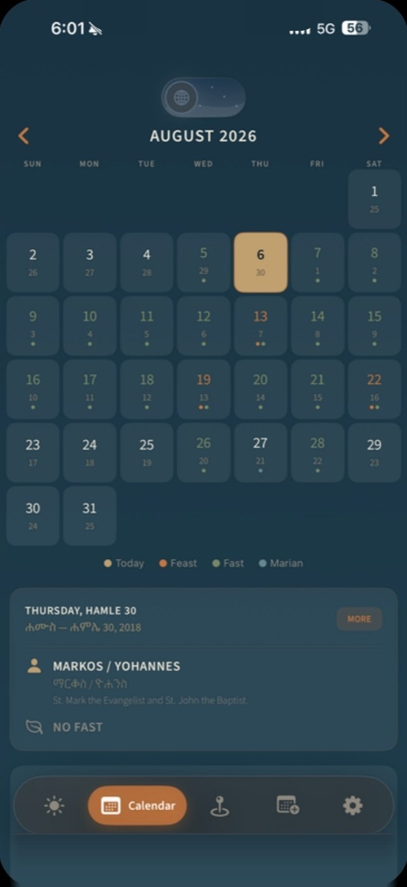
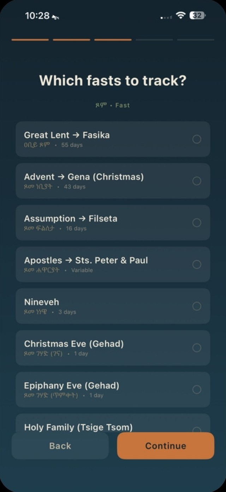
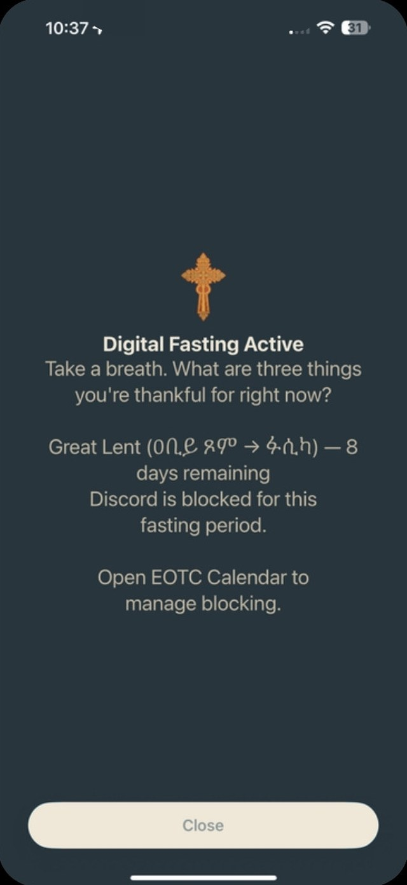
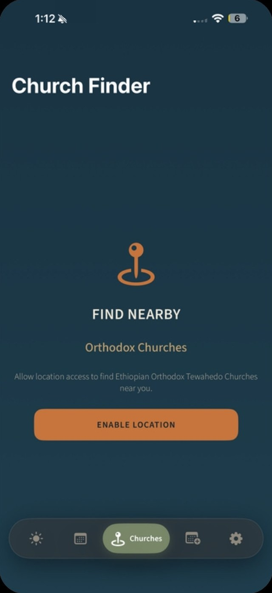

01 · Today
Every day, named.
Both dates, Addis Ababa time, the day's fast and its saint — in English or Amharic, with Ge'ez numerals if you like.
Productivity · iPhone, iPad, Watch & Mac
Your daily spiritual companion.
Every fast, feast and saint's day of the Ethiopian Orthodox Tewahedo Church, in English and Amharic — for a diaspora whose church keeps different dates from the country around it.
Today
Hover, tap or use the arrow keysTap anywhere on the ring to explore the year.
02 — A closer look
Keep scrolling — watch the first screen change language as it passes. Swipe, or use the arrows below, to see all five screens.


01 · Today
Both dates, Addis Ababa time, the day's fast and its saint — in English or Amharic, with Ge'ez numerals if you like.

02 · Month
Feasts, fasts and Marian days in both calendars. Tap any day for its saint and whether it's a fast.

03 · Fasts
Great Lent, Advent, the Assumption, the Apostles' fast, Nineveh and the Gehad eves — with a notification as each one begins.

04 · Digital Fasting
Block distracting apps for the fasting day or on a schedule. Unlock early and you wait through a short, reflective cooldown.

05 · Church Finder
Ethiopian Orthodox Tewahedo parishes near you, with service times and contact details.
00 / 05 · A closer look
03 — On your Lock Screen
The Lock Screen widget keeps today's Ethiopian date and the time in Addis Ababa beside your own. Set the language and numerals the way you would in the app.
Live: your date and time, and Addis Ababa's.
Sunday, September 27
9:41
Free on the App Store for iPhone, iPad, Apple Watch and Mac.